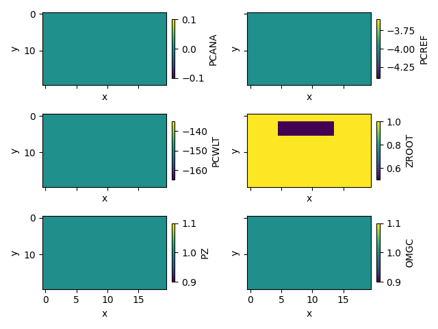
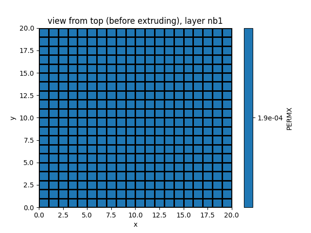

Note
Go to the end to download the full example code
Input plots#
Weill, S., et al. « Coupling Water Flow and Solute Transport into a Physically-Based Surface–Subsurface Hydrological Model ». Advances in Water Resources, vol. 34, no 1, janvier 2011, p. 128‑36. DOI.org (Crossref), https://doi.org/10.1016/j.advwatres.2010.10.001.
This example shows how to use pyCATHY object to plot inputs of the hydrological model.
Estimated time to run the notebook = 5min
# map_prop_veg ?
# map_prop2zone
import numpy as np
from pyCATHY import cathy_tools
from pyCATHY.plotters import cathy_plots as cplt
path2prj = "weil_exemple_inputs_plot" # add your local path here
simu = cathy_tools.CATHY(dirName=path2prj)
# simu.run_preprocessor()
🏁 Initiate CATHY object
simu.show_input(prop=”dem”)
# show time atmbc
# simu.show_input(prop='atmbc')
# In progress --> show spatial atmbc
# simu.update_dem_parameters()
# simu.update_prepo_inputs()
Add a new zone
simu.update_prepo_inputs()
simu.update_veg_map(np.ones([int(simu.hapin['N']),int(simu.hapin['M'])]))
simu.update_zone(np.ones([int(simu.hapin['N']),int(simu.hapin['M'])]))
simu.show_input(prop="root_map")
simu.update_soil()
🔄 Update hap.in file
🔄 update dem_parameters file
─────────────────────────────────────────────────────────────────────────────────────── ⚠warning messages above ⚠────────────────────────────────────────────────────────────────────────────────────────
The parm dictionnary is empty
Falling back to defaults to update CATHYH
This can have consequences !!
───────────────────────────────────────────────────────────────────────────────────────────────────────────────────────────────────────────────────────────────────────────────────────────────────────────
🔄 update parm file
🔄 update zone file
🔄 update dem_parameters file
🔄 update parm file
🔄 Update soil
homogeneous soil
veg_map = simu.veg_map
veg_map[2:6, 5:14] = 2
simu.update_veg_map(veg_map)
simu.show_input(prop="root_map")
Feddes is a dictionnary with 6 entries, and for each a list
FP_map_1zone = simu.soil_FP["FP_map"] # read existing mapping
FP_map_2zones = {}
for k in FP_map_1zone:
if k == "ZROOT":
ZROOT_zone2 = FP_map_1zone["ZROOT"][0] / 2
FP_map_2zones[k] = [FP_map_1zone[k][0], ZROOT_zone2]
else:
FP_map_2zones[k] = [FP_map_1zone[k][0], FP_map_1zone[k][0]]
# simu.show_input(prop='soil', yprop='ZROOT', layer_nb=12)
simu.update_soil(FP_map=FP_map_2zones, show=True)
# simu.update_zone(veg_map)
# simu.update_veg_map(veg_map)
simu.show_input(prop="soil", yprop="PERMX", layer_nb=4)
# Here we can imaging to get a more complexe vegetation map from remote sensing data instead
- 
🔄 Update soil
homogeneous soil
simu.update_prepo_inputs()
🔄 Update hap.in file
🔄 update dem_parameters file
This will automatically create a new vtk mesh containing the zone flags error –> number of tretra in grid3d < n of tretra in the mesh (mission one element)
simu.update_zone()
🔄 update zone file
🔄 update dem_parameters file
🔄 update parm file
simu.show_input(prop="soil", yprop="PERMX", layer_nb=1)
simu.show_input(prop="soil", yprop="POROS", layer_nb=2)
- 
Show layer number 10
simu.show_input(prop="soil", yprop="VGNCELL", layer_nb=10)
simu.update_soil()
df_soil, _ = simu.read_inputs("soil")
df = simu.read_inputs("soil")
🔄 Update soil
homogeneous soil
zones = simu.zone
simu.update_prepo_inputs()
zones[5:14, 5:14] = 2
simu.update_zone(zones)
simu.show_input(prop="zone")
🔄 Update hap.in file
🔄 update dem_parameters file
🔄 update zone file
🔄 update dem_parameters file
🔄 update parm file
we just need to build a dictionnary as: {property: [value_zone1, value_zone2]}
# what if dimension of the heteregeneity is 3d?
SPP_map_1zone = simu.soil_SPP["SPP_map"] # read existing mapping
SPP_map_2zones = {}
for k in SPP_map_1zone:
if k == "PERMX":
PERMX_zone2 = SPP_map_1zone["PERMX"][0] / 2
SPP_map_2zones[k] = [SPP_map_1zone[k][0], PERMX_zone2]
else:
SPP_map_2zones[k] = [SPP_map_1zone[k][0], SPP_map_1zone[k][0]]
simu.update_soil(SPP_map=SPP_map_2zones)
🔄 Update soil
homogeneous soil
simu.show_input(prop="soil", yprop="PERMX", layer_nb=2)
simu.show_input(prop="soil", yprop="PERMX", layer_nb=12)
Total running time of the script: ( 0 minutes 2.533 seconds)